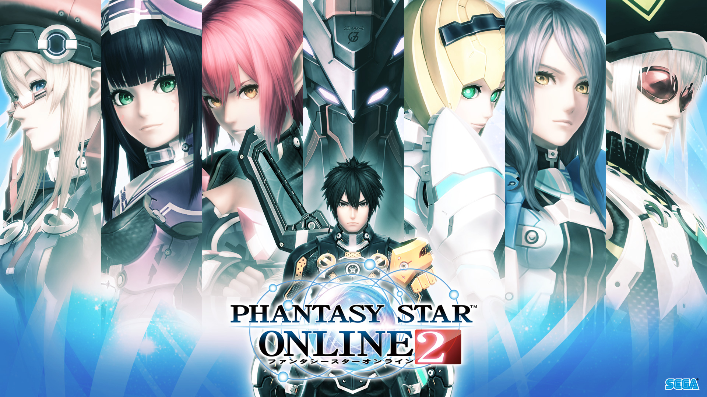
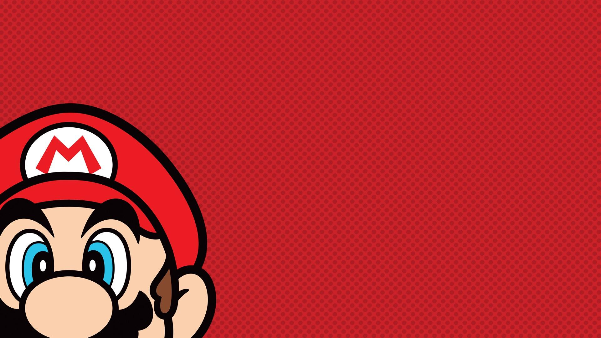

Welcome to Adel's 2020 Web develpment project.
I have been tasked with creating a website that can showcase my current understand and skillset towards frontend web development.
I have chosen to create a website that showcases some of my favorite and most anticipated games. On each of these pages you will see examples of
Flexbox, image manipulation, video embedding and responsive web design. Please note the contact box does not actually send anything, but feel free to use it anyway!
Final Fantasy XVI

Final Fantasy XVI is the 16th installment in the main series and one of my most anticipated games.
I have been a Final Fantasy fan from as far back as I remember and it’s really exciting seeing Square Enix still breathe life into the franchise.
For this web page I tried to clone to the main FF landing page as well as try to make the page responsive.
Phantasy Star Online 2 - NG

Since the Sega Dreamcast I have been a Phantasy Star Online fan and have played the MMORPG for many years.
It was difficult when Phantasy Star Online 2 got announced and released in Japan only for many years forcing overseas players to
use an official english patch or straight up play in Japanese, however, alongside the global release (finally…) a new expansion called
‘New-Genesis’ has been announcement and looks to extent ever aspect of the game including a new graphics engine.
For this Page I experimented initially with flex boxes but as you can tell from the layout it was a really rough first try.
Demon's Souls

The souls series has been a favorite entry of mine for a long time,
the lack of narrated story and the pace make this game series one of the most mysterious yet captivating out there,
gaining a cult-like following and dedicated media channels whose sole purpose (get it...soul?!) is to decrypt in the lore.
After finding out that ‘Demon’s Souls’ , the first entry in the series, is getting a remake for the PS5 it instantly hit
my most anticipated list. I feel this webpage came out the cleanest, I got more comfortable with Flexbox and included a gallery.
Adel's Nintendo Allstars

I grew up with Nintendo and remember playing games on the NES as a kid (yeah I’m old I know…)
but I wanted to try and make my version of the original Nintendo website,
this page looks a little different from the others, I moved the nav bar to the bottom of the main image to allow for a sticky header bar with a logo.
I also followed a tutorial that helped me create an I title that sat on the main image and adapted to screen size without being responsive. I also included a gallery of some of my favorite nintendo games.